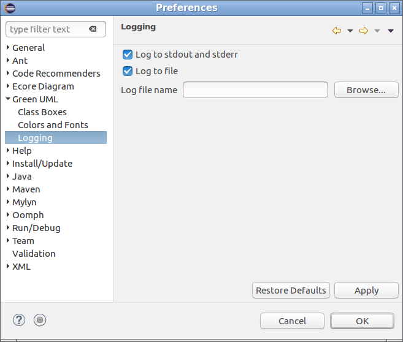

Preferences — Logging
Logging preferences control the destination of Green UML’s diagnostic messages. By default,
they are sent to the standard output stream (stdout) and the standard error stream (stderr) which
in turn end up on the console.
The following settings let you redirect those messages to a file, while optionally preserving
the default destination, or turn them off completely. These settings are in effect only after the
Green UML plug-in is initialized by Eclipse.

Log to stdout and stderr
Send diagnostic messages to the standard output stream and the standard error stream
(this is the default behaviour).
Log to file
Send diagnostic messages to a file. If you enable this option, you must also provide the name for
the log file.
Log file name
The name and location of the log file which is supposed to receive the diagnostic messages.
If the file already exists, new data will be appended to its end.